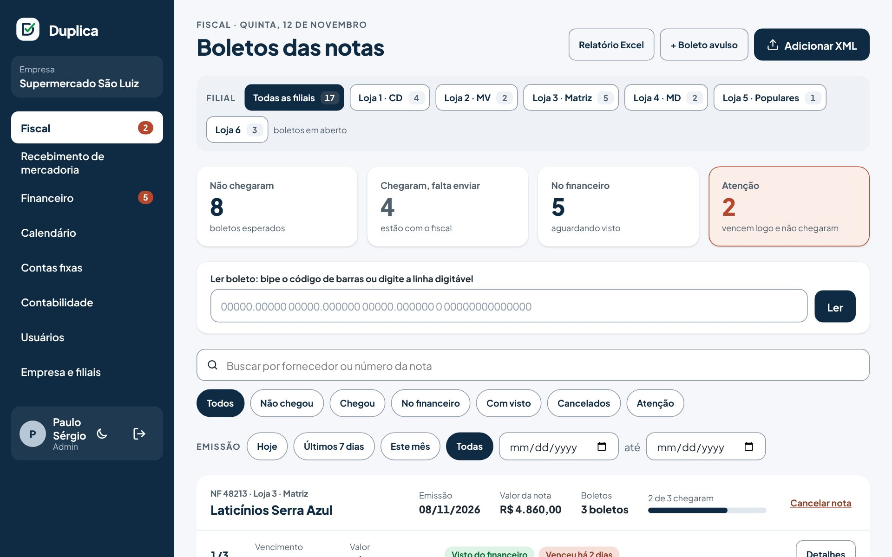

Leitor de boleto
Bipe o código de barras ou cole a linha digitável. O Duplica acha a nota pelo valor e vencimento e guarda a linha para o financeiro copiar.
O Duplica acompanha cada boleto das suas notas de entrada, da chegada da mercadoria até o pagamento. Todo mundo sabe o que chegou, com quem está e o que vence esta semana.
Sem cartão de crédito. Pronto em 5 minutos.
Ficou na prancheta do conferente, na gaveta do fiscal ou no carro do entregador. Ninguém sabe dizer.
Aí vem a multa, os juros e a ligação constrangedora para o fornecedor.
Funciona enquanto a mesma pessoa cuida de tudo. Com várias lojas, não funciona mais.
Cada etapa tem um dono e fica registrada com nome e hora. Se o boleto parar, dá para ver exatamente onde.
O Duplica lê o XML de cada nota de entrada e já cria os boletos esperados, com parcelas e vencimentos.
AutomáticoO conferente aponta o celular para o código de barras da nota. O sistema marca "chegou" e avisa o fiscal na hora.
RecebimentoConfere, anexa foto se quiser e envia ao financeiro. Boleto pago por Pix ou cheque também fica registrado.
FiscalDá o visto, copia a linha digitável e marca como pago. O calendário mostra o que vence nos próximos dias.
FinanceiroTelas diretas, letras grandes, um clique por etapa. Funciona no computador do escritório e no celular da loja.

Fiscal: todas as notas com os boletos de cada uma. Dá para filtrar por loja, ver o que não chegou e o que vence logo.
Bipe o código de barras ou cole a linha digitável. O Duplica acha a nota pelo valor e vencimento e guarda a linha para o financeiro copiar.
Cada CNPJ é uma loja. Veja tudo junto ou filtre por loja, com os totais de cada uma.
Internet, sistema, aluguel e as guias de imposto do mês aparecem sozinhas, para ninguém esquecer.
Todos os boletos de um período, pagos e não pagos, com quem fez cada etapa. Um clique.
Quem recebeu, quem enviou, quem pagou e quando. Correções pedem motivo e ficam registradas.
Instale direto do navegador, sem loja de aplicativos. Tem tema claro e escuro.
Você paga pelo número de lojas (CNPJs) que usa. Usuários são ilimitados.
14 dias grátis, sem cartão. Depois do teste, você decide se assina. Sem fidelidade: cancela quando quiser.
Não. O Duplica trabalha ao lado dele: lê os XMLs das notas que o seu sistema já recebe e cuida só do caminho dos boletos.
Um programinha instalado em um computador da empresa envia os XMLs novos a cada 15 minutos. Também dá para arrastar os XMLs na tela ou lançar um boleto à mão.
Não. Ele controla: mostra o que vence, guarda a linha digitável para copiar e registra quem pagou. O pagamento continua no seu banco.
Cada empresa só enxerga os próprios dados, a conexão é criptografada e há cópias de segurança. Você pode pedir a exportação ou a exclusão dos dados quando quiser.
Sim. Abre no navegador e pode ser instalado como aplicativo. O recebimento de notas foi pensado para o celular, usando a câmera.
Cadastre a empresa e as lojas agora e teste com as suas notas de verdade.